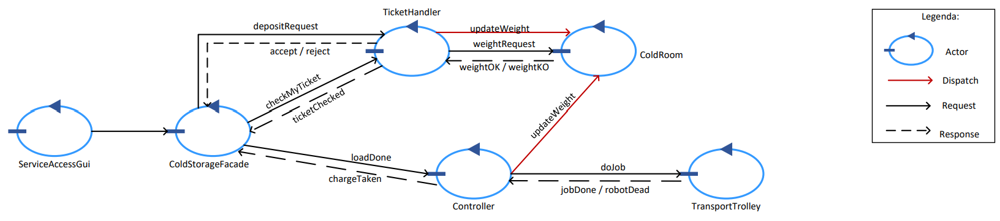
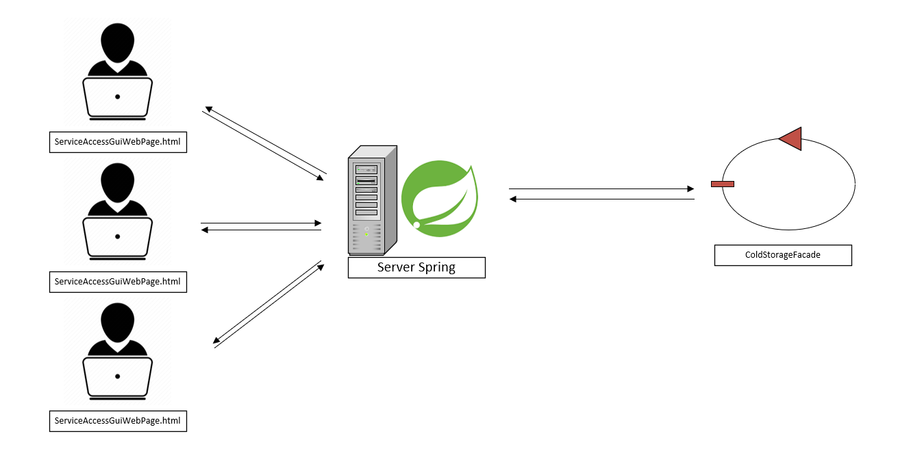

TicketHandler + ServiceAccessGUI.
Modello dello sprint precedente.
TicketHandler si occuperà di:
La separazione di TicketHandler e Controller porta l'utente a dover potenzialmente interagire con due entità diverse del sistema. Decidiamo di introdurre un componente intermedio per nascondere questa complessità dal lato dell'utente secondo il modello del pattern facade.
Il sistema sarà dunque ampliato secondo la seguente Architettura logica:


Request depositRequest : depositRequest(PESO)
Reply accept : accept(TICKET)
Reply reject : reject(NO_PARAM)
Request weightrequest : weightrequest(PESO)
Reply weightOK : weightOK( NO_PARAM )
Reply weightKO : weightKO( NO_PARAM )
Request checkmyticket : checkmyticket(TICKET)
Reply ticketchecked : ticketchecked(BOOL)
Request loaddone : loaddone(PESO)
Reply chargetaken : chargetaken(NO_PARAM)
"chargetaken" viene inviato dal Controller subito dopo la "doJob" associata alla richiesta.
Ricevuta la "chargetaken" il driver può uscire dal sistema considerando la transizione conclusa con successo.
Un driver potrebbe inviare la richiesta di un Ticket prima che un secondo driver, a cui è stato generato un Ticket in precedenza, abbiano scaricato.
Rischio di emettere un ticket per un peso non realmente disponibile nel momento di scarico.
Per risolvere il problema definiamo due pesi diversi:
Useremo la somma dei due pesi per validare o meno una richiesta di emissione ticket.
QActor coldroom context ctxcoldstoragearea {
[#
var PesoEffettivo = 0
var PesoPromesso = 0
var MAXW = 50
#]
State updateWeight {
onMsg ( updateWeight : updateWeight(P_EFF, P_PRO) ) {
[# PesoEffettivo += P_EFF
PesoPromesso -= P_PRO
#]
}
}
State checkweight {
onMsg(weightrequest : weightrequest(PESO)){
[# var PesoRichiesto = PESO #]
if [# PesoEffettivo + PesoPromesso + PesoRichiesto <= MAXW #] {
[# PesoPromesso += PesoRichiesto #]
replyTo weightrequest with weightOK : weightOK( NO_PARAM)
} else {
replyTo weightrequest with weightKO : weightKO( NO_PARAM )
}
}
}
}
A seguito della scadenza di un Ticket, il Transport Trolley non si farà carico della richiesta e il peso promesso del ticket rimarrà considerato in Cold Room.
L'eliminazione dei ticket scaduti viene fatta per necessità.
All'arrivo di una richiesta di emissione del Ticket, se lo spazio calcolato non fosse sufficiente si verifica il TICKETTIME associato ai Ticket generati e non ancora scaricati.
In presenza di Ticket scaduti allora il TicketHandler procederà ad aggiornare il peso promesso tramite dispatch "updateWeight".
In questo modo risolviamo anche il problema del peso fantasma.
Terminata l'azione del Transport Trolley, Controller aggiorna i due pesi tramite dispatch. Viene passata la quantità da decrementare dal peso promesso e la quantità da incrementare al peso effettivo.
Caso particolare: i pesi sono aggiornati da TicketHandler tramite dispatch "updateWeight" nella gestione dei ticket scaduti.
Dall'analisi della sicurezza sono apparse le seguenti vulnerabilità:
Dei punti definiti, parlando col committente, dovremmo rispettare solo 1 e 3.
TICKETTIME è un parametro variabile al lancio del sistema. Definiamo un file di configurazione con i valori da caricare al lancio (AppConfig.json):
{
"TicketTime": "600"
}
QActor tickethandler context ctxcoldstoragearea {
[# var TICKETTIME = GetTicketTimeFromConfigFile(); #]
...
}
Progettare le GUI come attori non è ottimale, dobbiamo progettarla come un componente alieno al sistema che si interfacci con esso.
Per fare ciò ci appoggiamo alla tecnologia di SPRING che permette l'interazione tramite web e la gestione di molti utenti collegati contemporaneamente.
Nello schema iniziale il server Spring prenderà quindi il posto dell'attore ServiceAccessGUI, l'interazione con l'utente avverrà tramite pagine html statiche fornite dal server ad ogni utente che si collega.

La soluzione migliore sarebbe metterlo in ascolto dei cambiamenti a ColdRoom, ColdRoom diventa observable come da analisi preliminari.
In alternativa Req/Resp di deposit weigth fa una richiesta per sapere il peso in coldRoom.
In entrambi i casi usiamo la somma tra peso effettivo e peso promesso.
PROBLEMA: Usando pagine html statiche, anche mantenendo aggiornato il peso corrente nel server spring l'utente deve ricaricare la pagina per visualizzare il nuovo peso.
Motivo per il quale abbiamo deciso di cambiare verso pagine html dinamiche.

Durante la fase di testing dovranno essere verificati i seguenti casi:
Codice secondo test: TestService
Ticket conterrà TIME, PESO e SEQ. La stringa sarà composta da questi 3 valori separati da "_" ed inizierà con "T":
int TIME
int PESO
int SEQ
Ticket = "T"+"_"+TIME+"_"+PESO+"_"+SEQ #esempio di ticket: T_1697643071_15_0
System coldstorage2
//-----------------------------------------------------------------------
...
//-----------------------------------------------------------------------
Request depositRequest : depositRequest(PESO)
Reply accept : accept(TICKET) for depositRequest
Reply reject : reject(NO_PARAM) for depositRequest
Request weightrequest : weightrequest(PESO)
Reply weightOK : weightOK( NO_PARAM ) for weightrequest
Reply weightKO : weightKO( NO_PARAM ) for weightrequest
Request checkmyticket : checkmyticket(TICKET)
Reply ticketchecked : ticketchecked(BOOL) for checkmyticket
Request loaddone : loaddone(PESO)
Reply chargetaken : chargetaken(NO_PARAM) for loaddone
Request getweight : getweight(NO_PARAM)
Reply currentweight : currentweight(PESO_EFF,PESO_PRO) for getweight
Dispatch startToDoThings : startToDoThings( NO_PARAM )
//-----------------------------------------------------------------------
Context ctxcoldstoragearea ip [host="localhost" port=8040]
//-----------------------------------------------------------------------
Rispetto allo sprint 1 non abbiamo più bisogno della mockRequest e gestiamo il problema del peso ipotetico.
QActor controller context ctxcoldstoragearea {
[# var P_EFF = 0
var P_DIC = 0
#]
State s0 initial { printCurrentMessage } Goto work
State work{
println("controller - in attesa") color green
} Transition t0 whenRequest loaddone -> startjob
State startjob {
onMsg(loaddone : loaddone(PESO) ){
[# PESO = payloadArg(0).toInt() #]
}
replyTo loaddone with chargetaken : chargetaken( NO_PARAM )
request transporttrolley -m doJob : doJob($P_EFF)
} Transition endjob whenReply robotDead -> handlerobotdead
whenReply jobdone -> jobdone
State jobdone{
forward coldroom -m updateWeight : updateWeight($P_EFF, $P_PROM)
} Transition repeat -> work
Rispetto allo sprint precedente ColdRoom deve verificare se è presente abbastanza spazio e rispondere di conseguenza.
UpdateWeight inoltre deve essere aggiornato per gestire il problema del peso ipotetico.
Il peso promesso viene sottratto, se va aumentato fornire P_PRO negativo.
QActor coldroom context ctxcoldstoragearea {
...
State checkweight {
onMsg(weightrequest : weightrequest(PESO)){
[# var PesoRichiesto = payloadArg(0).toInt() #]
if [# PesoEffettivo + PesoPromesso + PesoRichiesto <= MAXW #] {
[# PesoPromesso += PesoRichiesto #]
replyTo weightrequest with weightOK : weightOK( NO_PARAM)
} else {
replyTo weightrequest with weightKO : weightKO( NO_PARAM )
}
}
} Goto work
State returnweight{
onMsg(getweight : getweight(NO_PARAM)){
replyTo getweight with currentweight : currentweight($PesoEffettivo, $PesoPromesso)
}
} Goto work
State updateWeight {
onMsg ( updateWeight : updateWeight(P_EFF, P_PRO) ) {
[# PesoEffettivo += payloadArg(0).toInt()
PesoPromesso -= payloadArg(1).toInt()
#]
}
} Goto work
}
Il server si collegherà agli attori tramite socket o come coapObserver.
Le richieste ajax provenienti dai client verranno inoltrate tramite socket.
Il server è composto di un ApiController.java che sfrutta la classe MessageSender per inviare messaggi.
Lato client rendiamo le pagine dinamiche tramite ApiController.java
Gli eventi degli attori osservati tramite observer verranno inoltrati ai client tramite websocket, create all'inizio di ogni sessione. Vedi dinamic.js.
| Lisa Innocenti Uccini | Luca Lombardi | Giacomo Romanini |
|---|---|---|
 |
 |
 |
| github: LisaIU00 | github: Lombax99 | github: RedDuality |